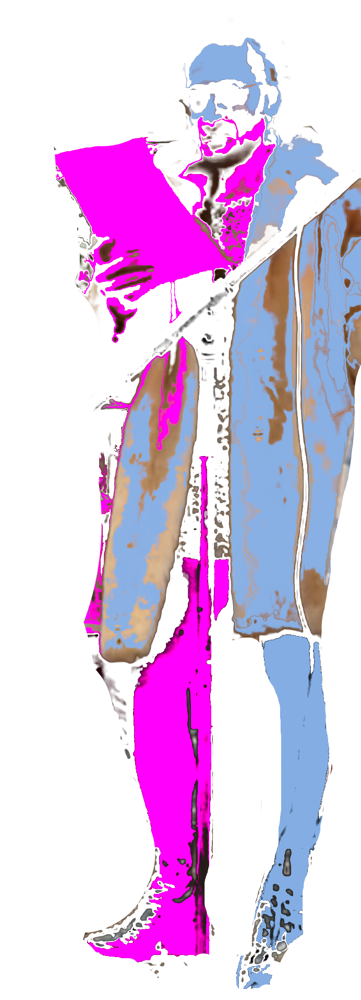

j'ai finalement réussi à faire un site avec mes petits doigts ! youhou !
bon,
il naît aussi lentement que mes poèmes...
mais il sera bientôt là.
peut-être.
quand j'aurai fini tout ce qui traîne dans mes tiroirs.
bisous si consentis.
love Ϫ
fran·
choses à venir
